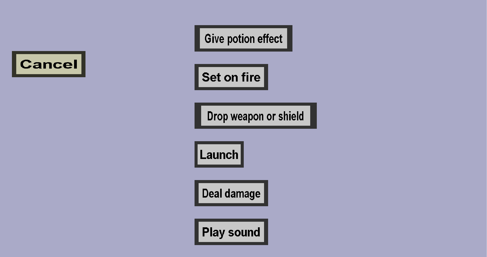

The attack effect type select is needed to choose the type of attack effect you want to create. It should look like this:

-
The Give potion effect attack effect will give a potion effect to the target. Clicking this button will take
you to the potion attack effect menu, where you can configure the potion effect.
-
The Set on fire attack effect will set the target on fire. Clicking this button will take you to the
ignite attack effect menu, where you can configure the duration.
-
The Drop weapon or shield attack effect will cause the target to drop their weapon or shield. (They can still
pick it up afterwards, but this can be rather disruptive in battle.)
-
The Launch attack effect can launch the target. (For instance, knocking the target backwards or upwards.)
See the launch attack effect menu for more information.
-
The Deal damage attack effect will deal damage to the target or attacker after a given delay.
Note: players and mobs in minecraft can only take damage ~1 time per second. Attacking more often than this
has no effect. So if you choose to use this effect against the victim, you need to ensure the delay
is long enough. Using this effect against the attacker should not cause any problems.
See the deal damage attack effect menu for more information.
-
The Play sound attack effect will play a sound at the targets location that only the target can hear.
Clicking this button will take you to the sound edit menu, where you can
configure this sound.